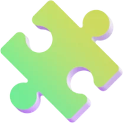
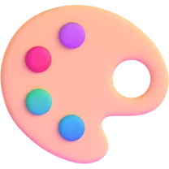
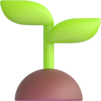
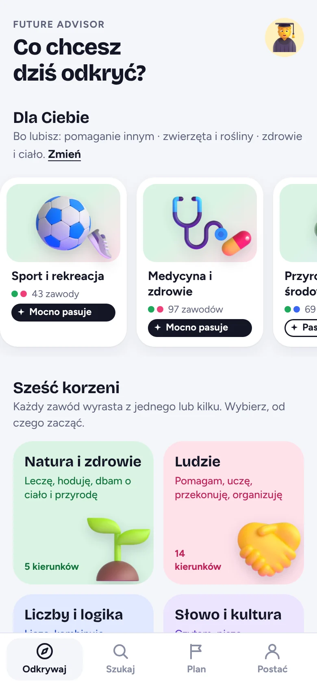
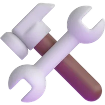
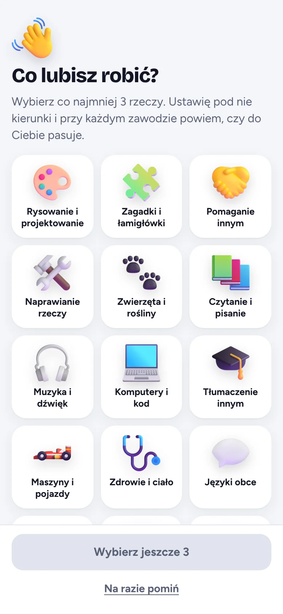
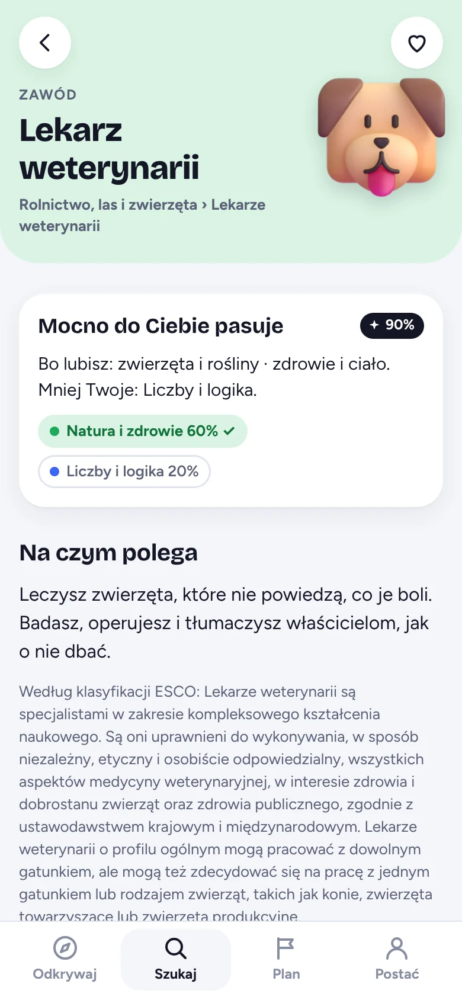
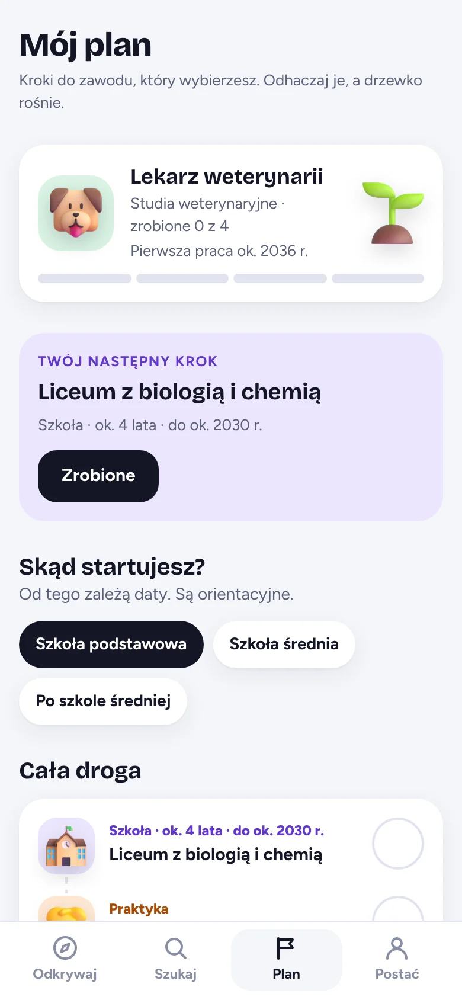
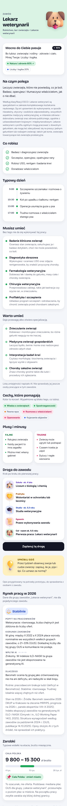

Sprawdź, co możesz robić w życiu
Kompas karier opisuje zawody od środka: co robi się w ciągu dnia, jakich umiejętności trzeba, ile się zarabia i jak do tego dojść. Zaznaczasz, co lubisz, a aplikacja ustawia kierunki pod Ciebie.
Bez konta i bez instalacji. Działa w przeglądarce, a po pierwszym otwarciu także bez internetu.




Zrobiłem ją, bo sam nie wiedziałem, co można robić w życiu
Zwykle znamy te zawody, które wykonują rodzice, znajomi i ludzie z telewizji. Tymczasem zawodów jest tysiące, a część z nich powstała dopiero w ostatnich latach, jak inżynier AI.
Kompas karier zbiera ich ponad 2300 w jednym miejscu. Zawody wyrastają z sześciu korzeni, czyli z tego, co lubisz robić. Jeden zawód może wyrastać z kilku korzeni naraz, dlatego na kartach widać kolory.
Fabian, autor aplikacji
Liczby i logika
Liczę, kombinuję, szukam rozwiązań
Słowo i kultura
Czytam, piszę, opowiadam, dyskutuję
Ludzie
Pomagam, uczę, przekonuję, organizuję
Ręce i technika
Buduję, naprawiam, obsługuję maszyny

Natura i zdrowie
Leczę, hoduję, dbam o ciało i przyrodę
Obraz i dźwięk
Rysuję, projektuję, gram, filmuję
Cztery kroki od „nie wiem” do planu
Wszystko dzieje się w jednej aplikacji. Przewiń, żeby zobaczyć każdy krok na prawdziwym ekranie.
-
Zaznacz, co lubisz robić
Wybierasz co najmniej trzy rzeczy z listy, na przykład zagadki, zwierzęta albo komputery. To Twoja postać. Zapisuje się tylko w przeglądarce na Twoim urządzeniu.

-
Zobacz kierunki ułożone pod siebie
Sześć korzeni prowadzi do kierunków, a kierunki do zawodów. Na górze są te najbliższe temu, co lubisz, z informacją, jak bardzo pasują.
-
Otwórz zawód i zajrzyj do środka
Na jednej karcie są opis, typowy dzień, konkretne umiejętności, plusy i minusy, sytuacja na rynku pracy i zarobki. Aplikacja mówi też, czy zawód do Ciebie pasuje i dlaczego.

-
Zaplanuj drogę do zawodu
Wybierasz, skąd startujesz, a aplikacja rozpisuje kroki z orientacyjnymi datami. Odhaczasz je, a drzewko rośnie.

Jedna karta zawodu, bez zgadywania
Każdy z ponad 2300 zawodów ma opis, umiejętności i plan drogi. Poniżej jest to, co znajdziesz na karcie, na przykładzie lekarza weterynarii.
Typowy dzień
Godzina po godzinie: od 9:00, kiedy szczepisz szczeniaka, do 17:00, kiedy rozmawiasz z właścicielem starego psa.
Konkretne umiejętności
Lista Musisz umieć i lista Warto umieć, z krótkim opisem każdej. Lekarz weterynarii ma na nich diagnostykę obrazową, farmakologię weterynaryjną i chirurgię, a nie ogólnik „zna się na zwierzętach”.
Plusy i minusy
Co w tej pracy jest fajne, a co trudne. Na przykład: ratujesz zwierzęta, ale zdarzają się dyżury i nagłe wezwania.
Rynek pracy w 2026
Czy popyt rośnie, w którą stronę idą zarobki i jak duży wpływ ma AI, razem z wyjaśnieniem, skąd to wiadomo i na ile można temu ufać.
Zarobki w Twoim mieście
Widełki brutto przeliczone na wybrane miasto. To szacunek, a nie oferta, i aplikacja mówi to wprost.
Droga do zawodu
Od liceum z biologią i chemią po prawo wykonywania zawodu, z orientacyjnym czasem każdego etapu. Dla lekarza weterynarii to około 9,5 roku. Jednym przyciskiem dodajesz tę drogę do swojego planu.

Skąd są dane
- Zawody i opisy: klasyfikacja ESCO v1.0.8 Komisji Europejskiej, zmodyfikowana i uzupełniona o nowe zawody, na przykład związane z AI.
- Rynek pracy: Barometr zawodów 2026, dane GUS, raport ILO–NASK z 2025 roku i raport WEF o przyszłości pracy z 2025 roku.
- Zarobki: mediana płac GUS dla grupy zawodów, przesunięta o poziom płac w danym mieście.
To wersja do sprawdzenia. Listy umiejętności i część opisów napisało AI na podstawie tych źródeł. Osoby z danego zawodu jeszcze ich nie sprawdziły i aplikacja zaznacza to przy każdej karcie.
Kod i dane na GitHubieZacznij od trzech rzeczy, które lubisz
Zajmuje to minutę. Potem zobaczysz kierunki ułożone pod Ciebie i będziesz mógł zajrzeć do każdego zawodu.
Otwórz aplikacjęŻeby mieć ją na ekranie telefonu, otwórz ją w przeglądarce i wybierz „Dodaj do ekranu głównego”.